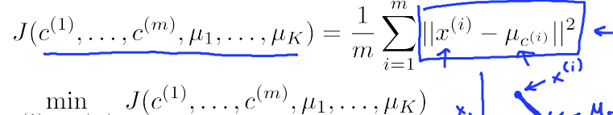
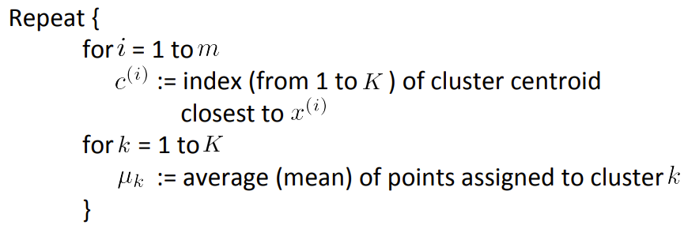
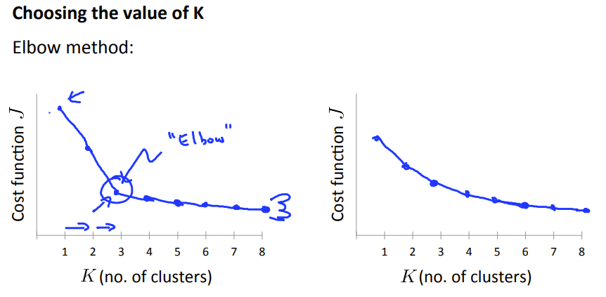
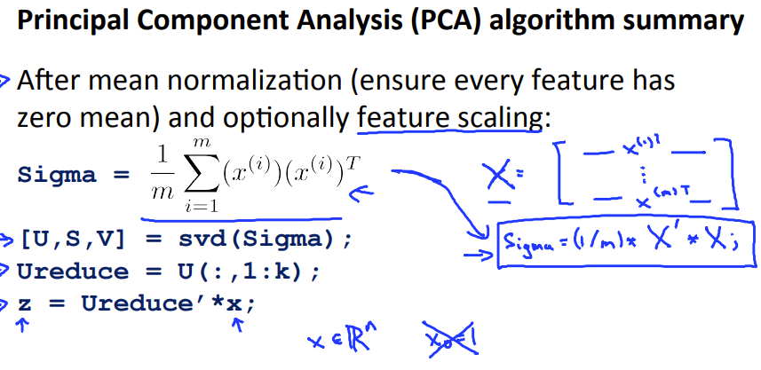
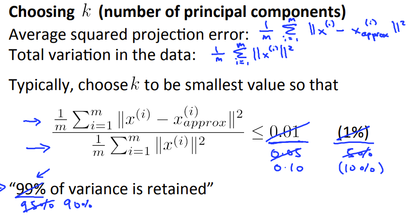
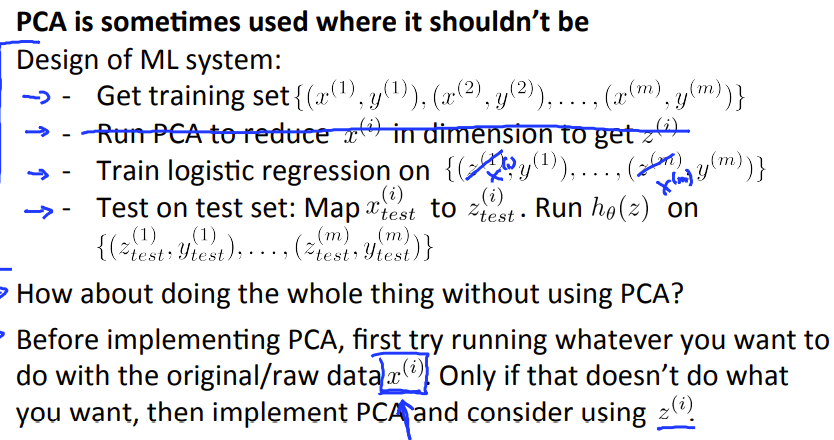

开始非监督机器学习辽
大致步骤
1.选取要分的类的K个数，随机初始化K各个点为初始聚合点
2.比较样点和聚合点的距离，建立一个新的向量，在相应的位置标记最近距离点的代号
3.更新聚合点的值，等于其所有标记点的平均值。
4.重复 2、3步，直到损失函数平滑
从过程中规划，可以总结为归纳成优化一个函数

因为K均值算法可能造成局部最优解，最好多次(比如100)随机化聚合点，然后比较标记后的损失函数，看哪一次的值最小
下面是一次初始化的函数
x
function centroids = kMeansInitCentroids(X, K)%KMEANSINITCENTROIDS This function initializes K centroids that are to be % You should return this values correctlycentroids = zeros(K, size(X, 2));m = size(X,1);rand = randperm(m,K);centroids = X(rand,:);关于标记的代码
x
function idx = findClosestCentroids(X, centroids)%FINDCLOSESTCENTROIDS computes the centroid memberships for every example% idx = FINDCLOSESTCENTROIDS (X, centroids) returns the closest centroids% in idx for a dataset X where each row is a single example. idx = m x 1 % vector of centroid assignments (i.e. each entry in range [1..K])%% Set KK = size(centroids, 1);m = size(X,1);% You need to return the following variables correctly.idx = zeros(size(X,1), 1);dis = zeros(K,1);for i = 1:m, for j = 1:K, dist = X(i,:) - centroids(j,:); dis(j,1) = dist*(dist'); [c idx(i,1)] = min(dis); endforendforend关于重新聚合的代码
x
function centroids = computeCentroids(X, idx, K)%COMPUTECENTROIDS returns the new centroids by computing the means of the %data points assigned to each centroid.% centroids = COMPUTECENTROIDS(X, idx, K) returns the new centroids by % computing the means of the data points assigned to each centroid. It is% given a dataset X where each row is a single data point, a vector% idx of centroid assignments (i.e. each entry in range [1..K]) for each% example, and K, the number of centroids. You should return a matrix% centroids, where each row of centroids is the mean of the data points% assigned to it.[m n] = size(X);% You need to return the following variables correctly.centroids = zeros(K, n);for k = 1 : K, id = find(idx == k); centroids(k,:) = sum(X(id , :)) / size( id , 1);endforend
如果能根据问题选择分类点个数的话，就用这个，如果未知分类点个数，就采用上图的方式
当出现拐点时，选择的K最后就是拐点附近。如果运气不好，得到一个平滑的曲线，则...随缘吧
当数据大致分布在更低维的空间时，可以进行映射，减少特征值。使得数据存储空间减少，并且提高计算量
先对数据进行预处理
1.去中心化，减去均值等同于坐标移动，这样就能把原始数据点的中心移到与原点重合，此举有利于很多表达，比如数据的协方差矩阵可以直接写成XX'，若没有减去均值，则每两个特征之间都要进行(X-X均值)（Y-Y均值）运算，再组合成协方差矩阵。
2.除以标准差，除以标准差是为了统一并消除量纲。一个样本中有多个特征，有些可能表示长度，有些可能表示重量。如果各个特征之间的数值或数量级存在较大差异，就会使得较小的数被淹没，导致主成分偏差较大。所以要将每个特征对应的样本除以标准差，这样才能让他们仅以“数的概念一起比较运算”。
x
[X_norm, mu, sigma] = featureNormalize(X); function [X_norm, mu, sigma] = featureNormalize(X)mu = mean(X);X_norm = bsxfun(@minus, X, mu);sigma = std(X_norm);X_norm = bsxfun(@rdivide, X_norm, sigma);end
然后再通过，协方差矩阵和奇异值分解的方法，得到投影的坐标系
x
function [U, S] = pca(X)%PCA Run principal component analysis on the dataset X% [U, S, X] = pca(X) computes eigenvectors of the covariance matrix of X% Returns the eigenvectors U, the eigenvalues (on diagonal) in S[m, n] = size(X);% You need to return the following variables correctly.U = zeros(n);S = zeros(n);Sigma = (1 / m) * (X' * X);[U , S , V] = svd(Sigma);end然后再投影
x
function Z = projectData(X, U, K)%PROJECTDATA Computes the reduced data representation when projecting only %on to the top k eigenvectors% Z = projectData(X, U, K) computes the projection of % the normalized inputs X into the reduced dimensional space spanned by% the first K columns of U. It returns the projected examples in Z.Z = zeros(size(X, 1), K);U_reduce = U(:,1:K);Z = X * U_reduce;end另外 为了描述是否PCA压缩得当，我们可以用变化保存来描述。
将每个X映射后，再映射回来，会得到一个误差，如果总的误差小于一定的值，说明可以映射

然后是作者的一点建议

一个面部压缩惊恐代码
x
clear ; close all; clcfprintf('Visualizing example dataset for PCA.\n\n');% The following command loads the dataset. You should now have the % variable X in your environmentload ('ex7data1.mat');% Visualize the example datasetplot(X(:, 1), X(:, 2), 'bo');axis([0.5 6.5 2 8]); axis square;fprintf('Program paused. Press enter to continue.\n');pause;% You should now implement PCA, a dimension reduction technique. You% should complete the code in pca.m%fprintf('\nRunning PCA on example dataset.\n\n');% Before running PCA, it is important to first normalize X[X_norm, mu, sigma] = featureNormalize(X);% Run PCA[U, S] = pca(X_norm);% Compute mu, the mean of the each feature% Draw the eigenvectors centered at mean of data. These lines show the% directions of maximum variations in the dataset.hold on;drawLine(mu, mu + 1.5 * S(1,1) * U(:,1)', '-k', 'LineWidth', 2);drawLine(mu, mu + 1.5 * S(2,2) * U(:,2)', '-k', 'LineWidth', 2);hold off;fprintf('Top eigenvector: \n');fprintf(' U(:,1) = %f %f \n', U(1,1), U(2,1));fprintf('\n(you should expect to see -0.707107 -0.707107)\n');fprintf('Program paused. Press enter to continue.\n');pause;fprintf('\nDimension reduction on example dataset.\n\n');% Plot the normalized dataset (returned from pca)plot(X_norm(:, 1), X_norm(:, 2), 'bo');axis([-4 3 -4 3]); axis square% Project the data onto K = 1 dimensionK = 1;Z = projectData(X_norm, U, K);fprintf('Projection of the first example: %f\n', Z(1));fprintf('\n(this value should be about 1.481274)\n\n');X_rec = recoverData(Z, U, K);fprintf('Approximation of the first example: %f %f\n', X_rec(1, 1), X_rec(1, 2));fprintf('\n(this value should be about -1.047419 -1.047419)\n\n');% Draw lines connecting the projected points to the original pointshold on;plot(X_rec(:, 1), X_rec(:, 2), 'ro');for i = 1:size(X_norm, 1) drawLine(X_norm(i,:), X_rec(i,:), '--k', 'LineWidth', 1);endhold offfprintf('Program paused. Press enter to continue.\n');pause;fprintf('\nLoading face dataset.\n\n');% Load Face datasetload ('ex7faces.mat')% Display the first 100 faces in the datasetdisplayData(X(1:100, :));fprintf('Program paused. Press enter to continue.\n');pause;fprintf(['\nRunning PCA on face dataset.\n' ... '(this might take a minute or two ...)\n\n']);% Before running PCA, it is important to first normalize X by subtracting % the mean value from each feature[X_norm, mu, sigma] = featureNormalize(X);% Run PCA[U, S] = pca(X_norm);% Visualize the top 36 eigenvectors founddisplayData(U(:, 1:36)');fprintf('Program paused. Press enter to continue.\n');pause;fprintf('\nDimension reduction for face dataset.\n\n');K = 100;Z = projectData(X_norm, U, K);fprintf('The projected data Z has a size of: ')fprintf('%d ', size(Z));fprintf('\n\nProgram paused. Press enter to continue.\n');pause;fprintf('\nVisualizing the projected (reduced dimension) faces.\n\n');K = 100;X_rec = recoverData(Z, U, K);% Display normalized datasubplot(1, 2, 1);displayData(X_norm(1:100,:));title('Original faces');axis square;% Display reconstructed data from only k eigenfacessubplot(1, 2, 2);displayData(X_rec(1:100,:));title('Recovered faces');axis square;fprintf('Program paused. Press enter to continue.\n');pause;close all; close all; clc% Reload the image from the previous exercise and run K-Means on it% For this to work, you need to complete the K-Means assignment firstA = double(imread('bird_small.png'));% If imread does not work for you, you can try instead% load ('bird_small.mat');A = A / 255;img_size = size(A);X = reshape(A, img_size(1) * img_size(2), 3);K = 16; max_iters = 10;initial_centroids = kMeansInitCentroids(X, K);[centroids, idx] = runkMeans(X, initial_centroids, max_iters);% Sample 1000 random indexes (since working with all the data is% too expensive. If you have a fast computer, you may increase this.sel = floor(rand(1000, 1) * size(X, 1)) + 1;% Setup Color Palettepalette = hsv(K);colors = palette(idx(sel), :);% Visualize the data and centroid memberships in 3Dfigure;scatter3(X(sel, 1), X(sel, 2), X(sel, 3), 10, colors);title('Pixel dataset plotted in 3D. Color shows centroid memberships');fprintf('Program paused. Press enter to continue.\n');pause;%% === Part 8(b): Optional (ungraded) Exercise: PCA for Visualization ===% Use PCA to project this cloud to 2D for visualization% Subtract the mean to use PCA[X_norm, mu, sigma] = featureNormalize(X);% PCA and project the data to 2D[U, S] = pca(X_norm);Z = projectData(X_norm, U, 2);% Plot in 2Dfigure;plotDataPoints(Z(sel, :), idx(sel), K);title('Pixel dataset plotted in 2D, using PCA for dimensionality reduction');fprintf('Program paused. Press enter to continue.\n');pause;